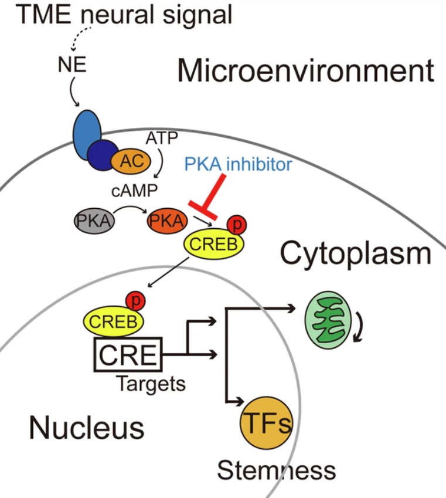
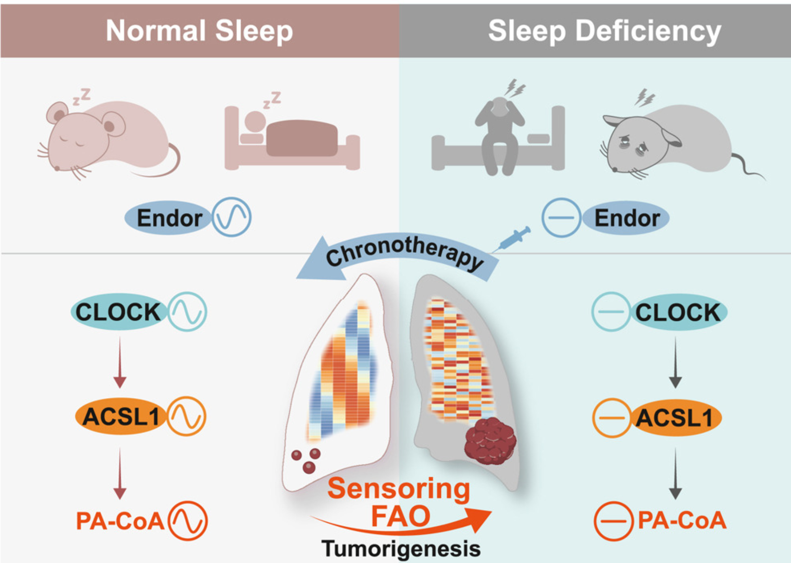

The Liu Lab bridges neuroscience and tumor immunology to elucidate the mechanisms underlying neuro-immune crosstalk in the tumor microenvironment and to pioneer transformative immunotherapeutic strategies.
From the perspectives of circadian rhythm disruption, chronic stress, and neuro-immune inflammation, the lab seeks to uncover novel regulatory mechanisms within the tumor microenvironment and the molecular networks governing cancer stem cells, ultimately developing multi-dimensional intervention strategies for precision therapy targeting cancer stem cells.
What We Study

肿瘤干细胞分子靶向治疗
We focus on the molecular basis by which cancer stem cells sustain their stemness and tolerate dormancy. Our findings reveal that the m6A reader YTHDC1-directed RBM4 aberrant splicing is triggered by nuclear AURKA, providing novel opportunities for targeted therapy of lung cancer by blocking nuclear oncogenic signaling. By identifying key regulatory nodes in this transition, we seek to screen actionable molecular targets, thereby providing a theoretical foundation for developing specific drugs against dormant cells.

神经免疫微环境对肿瘤干性的调控
The tumor microenvironment harbors not only immune cells but also nerve fibers and soluble neuro-signaling molecules. Our findings elucidate that cancer cell acquires stemness via a norepinephrine-ATF1 driven nucleus-mitochondria collaborated program, suggesting a spatialized stemness acquisition by hijacking microenvironmental neural signals. We are systematically dissecting this "neuro-immune-tumor" tripartite interaction network, so as to offer new strategies for blocking microenvironment-induced stemness.

免疫节律模式的神经心理行为调控
We explore how circadian rhythm disruption, chronic psychological stress, and neuro-immune inflammation reshape the tumor microenvironment and fuel cancer stem cell maintenance. Our findings reveal that fatty acid oxidation (FAO) is a circadian rhythm-sensoring mechanism that links sleep-deficiency (SD) to lung tumorigenesis and provides a promising chronotherapy strategy with β-endorphin for patients suffering from SD-related cancer.